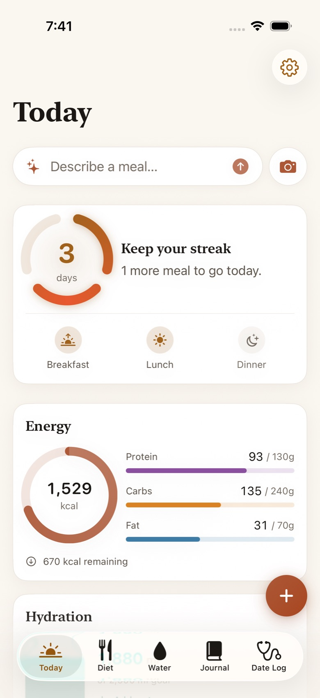
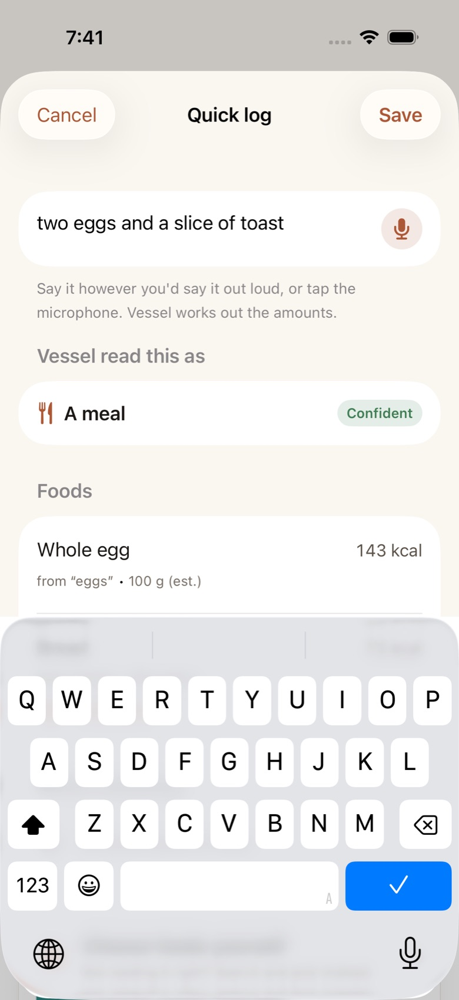
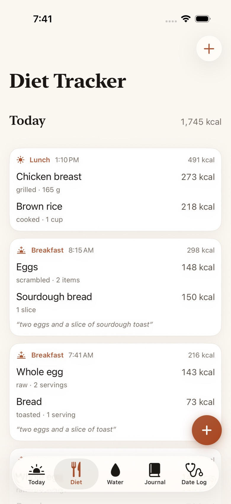
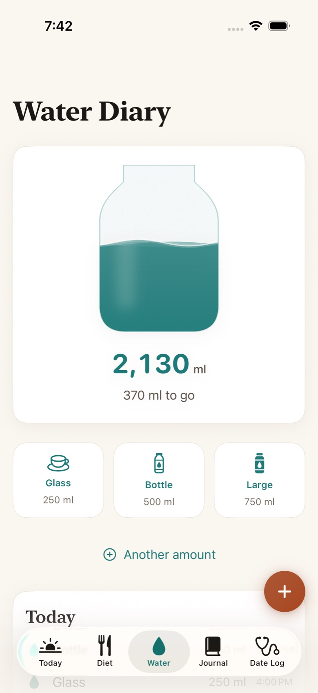
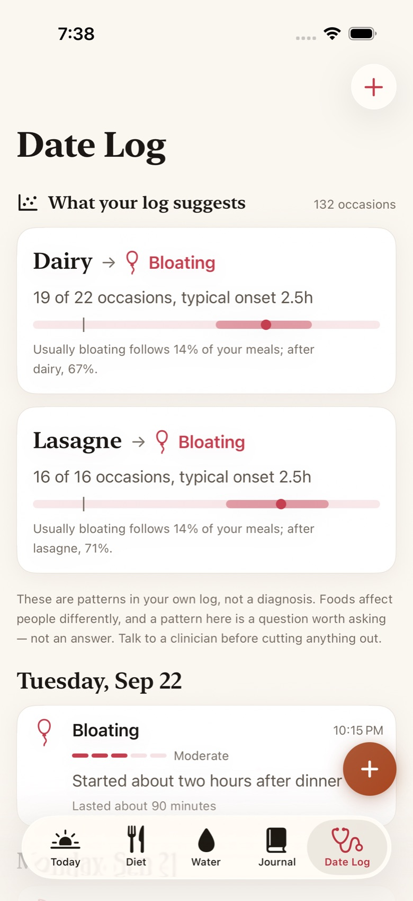

Nothing in the wiki matches that. Try a single word, such as “water” or “backup”.
Your first day
Vessel has no sign-up. Open it and you’re on Today, with five sections along the bottom (or down the side on iPad):
| Section | What it holds |
|---|---|
| Today | Your day at a glance: streak, energy, hydration, and what you’ve logged. |
| Diet | Everything you ate and drank, other than water, with its nutrition. |
| Water | Water, against a daily goal. |
| Journal | Notes about the day, with an optional mood. |
| Date Log | Reactions: how your body responded, and when it started. |
Three things are worth doing in the first five minutes:
- Tell Vessel how you eat. Tap the gear on Today, then Streak → Eating pattern. Three meals a day is the default; pick two meals, one meal, time-restricted or your own number if that’s closer to your life. The streak follows your pattern, not the other way round.
- Set your goals. In the same Settings screen, Daily goals holds energy, protein, carbohydrate, fat and water. Leave them as they are if you don’t track closely; they only colour the rings.
- Log something. Tap Describe a meal… on Today and type what you last ate, the way you’d say it to a friend: “two eggs and toast this morning”.
Today

- The streak ring fills as you log the meals your eating pattern asks for. The number inside is your current streak in days; your best is underneath. When the day is close to ending with meals still missing, it says Streak at risk.
- Energy shows calories so far against your goal, with protein, carbohydrate and fat.
- Hydration shows water against your goal. If you’ve turned on Count water in food, the water in milk, soup and fruit counts too.
- Describe a meal… opens Quick log. The camera button beside it opens From a photo.
- The gear opens Settings.
Tap any meal to open and edit it.
Quick log
Quick log is one box for everything: meals, drinks, water, reactions and journal notes. Type or say what happened and Vessel works out which it is.

What you can say
| You write | Vessel logs |
|---|---|
| two eggs and toast | A meal of two foods: eggs × 2, toast |
| half a baguette with butter for lunch | Lunch: baguette × ½, butter |
| a bowl of porridge with berries | A meal: porridge, berries |
| large glass of whole milk | A drink in the Diet log, with milk’s nutrition |
| bottle of water | 500 ml in the Water Diary |
| feeling bloated after lunch | A reaction in the Date Log |
Amounts
Numbers can be digits or words, “two and a half”, “a couple of”, “half a”, “a quarter of”. Units can be anything a person uses: cups, slices, spoons, grams, ounces, a bowl, a glass, a handful. When you don’t give an amount, Vessel uses a typical portion and marks the weight as an estimate.
Time
Say when, and Vessel files it there: “this morning”, “for breakfast”, “at lunch”, “last night”, “an hour ago”. Without a time, it’s logged now. You can always change the time before saving.
Checking what Vessel read
Nothing is saved until you tap Save. Underneath what you typed, Vessel read this as shows exactly what will go into your log:
- Each food with the phrase it came from (from “toast”), its weight, and calories. (est.) after a weight means Vessel picked a typical portion.
- A confidence mark. When Vessel isn’t sure it read you right, it says Worth checking and why.
- Which milk? Some foods vary so much that guessing would be wrong. Milk runs from 32 to 496 kcal per 100 g depending on the kind. For those, Vessel asks you to pick. It knows 426 such foods.
- No database match means the food will be saved with your wording and no nutrition. Use search instead (below) if the numbers matter.
If the reading is wrong, tap Not reading it right? Search and pick instead. and choose the foods yourself.
Searching for a food
From the Diet Tracker, tap + to search the food database directly. It holds 11,750 foods from USDA FoodData Central, entirely on your phone, so it works in airplane mode.
- Type a word or two. Search puts the ordinary version first: rice finds cooked white rice before rice cakes or rice pudding.
- Tap a food to open Portion. Choose what it’s Measured in, whether that’s cups, slices, grams or a portion USDA lists for that food, and set the amount. The weight and nutrition update as you go.
- Tap Add. Add as many foods as the meal had, then save.
Photos and barcodes
Tap the camera button on Today (or drag a photo onto the Diet log on iPad) to open From a photo. Choose a photo, and Vessel reads it on the device, in this order of trust:
- A barcode gives the exact figures from the product’s label, looked up in Open Food Facts. You can also type the barcode number into Or type a barcode and tap Look up.
- Text on the packaging usually names the product outright.
- The food itself: Vessel guesses what’s on the plate and how many things it can see. Tap the ones that are right. These are starting points, not measurements, so check the portions.
Each suggestion shows what Vessel saw and how sure it is, so a guess never looks as certain as a scanned label.
Speaking instead of typing
Tap the microphone in Quick log and talk. Tap again to stop. What you said appears as text, and you check and save it exactly as if you’d typed it.
Speech is turned into text on your device. If your iPhone can’t do that for your language, Vessel won’t send your voice to a server instead. It tells you so, and you can type.
The first time, iOS asks for the microphone and for speech recognition. Both are needed. If you declined, turn them back on in Settings → Vessel.
The Diet Tracker

- Edit a meal by tapping it. Change foods, portions, the time or which meal it was.
- Delete by pressing and holding a meal, then Delete.
- Meals marked Worth checking are ones Vessel wasn’t confident about. A quick look now keeps your patterns honest later.
Drinks are food; water is water
Milk, juice, coffee, tea, smoothies and beer go in the Diet Tracker with their real nutrition, because they have calories. Only water goes in the Water Diary. Tonic and coconut water have calories too, so they’re food.
The Water Diary

- Glass (250 ml), Bottle (500 ml) and Large (750 ml) are one tap each. In US units, a glass is 8 fl oz.
- Custom amount takes any volume, at any time earlier today.
- Press and hold an entry to edit or delete it.
- Your goal is in Settings → Daily goals → Water.
Turn on Settings → Units → Count water in food to include the water in everything else you log: milk, soup, fruit, coffee. The Water Diary still lists only water; the hydration total includes both.
The Journal
Tap New entry. Give it a title if you like (it’s optional), and write in How was today?. Turn on Record a mood to add one of five: Low, Subdued, Steady, Good, Great.
Entries are set in a serif face because they’re meant to be read back. Press and hold one to edit or delete it.
The Date Log
The Date Log records how your body reacted after eating. Tap Log reaction, or just say it in Quick log: “bad heartburn since about eight”.

What happened
The common reactions are shown first; More symptoms reveals the rest. There are eighteen: bloating, gas, cramping or pain, nausea, heartburn or reflux, diarrhea, constipation, urgency, headache, fatigue, brain fog, skin flare-up, itching, congestion, joint pain, racing heart, and other.
How strong
Each step on the scale says what it means, so a “moderate” on Monday means the same as one on Friday:
| Severity | Means |
|---|---|
| Barely there | I only notice it if I think about it |
| Mild | Present, but I can ignore it |
| Moderate | Hard to ignore, but I carried on |
| Disruptive | It changed what I did |
| Severe | I had to stop what I was doing |
When: the part that matters most
Set Started to when you first noticed it, not when you got round to logging it. Vessel looks at what you ate in the hours before the start time. A reaction that began at 9:40 pm but was logged at 11:05 pm needs 9:40 pm.
Turn on Track how long it lasted if duration helps you, and use the note for anything worth remembering.
Patterns in your log
At the top of the Date Log, What your log suggests appears once there’s enough history to say something honestly. A finding reads like:
Read it as: of the nine times you had dairy, bloating followed seven. After your other meals it follows about one in five. “Typical onset” is how long after eating it usually started.
How Vessel decides
Vessel groups your foods by what’s in them (dairy, gluten, allium, nightshade and others) and compares two things for each: how often a reaction followed meals with that ingredient, and how often it followed meals without it.
- Six hours. A meal counts if it was eaten within six hours before the reaction started. Longer windows make everything look related to everything.
- Meals close together count once. Food eaten within three hours of other food is one occasion, so grazing doesn’t inflate the count.
- At least five of each. An ingredient needs at least five occasions with it and five without before Vessel will name it. Four out of four looks convincing and is about as likely as four coin tosses landing heads.
- A real difference. The reaction must follow the ingredient at least one and a half times as often as it follows your other meals, and Vessel must be 90% sure the difference isn’t chance.
- Things that always come together can’t be separated. If you only ever have cheese on bread, Vessel can’t tell whether it’s the dairy or the gluten, and it says so rather than choosing.
With fewer than a few weeks of meals, or a history that shows no real difference, you’ll see nothing. That is the right answer; a made-up pattern would be worse than none.
Streaks and eating patterns
A day counts toward your streak when you’ve logged the meals your eating pattern asks for. Set it in Settings → Streak → Eating pattern:
| Pattern | To keep the streak |
|---|---|
| Three meals a day | Log breakfast, lunch and dinner. |
| Two meals a day | Log any two main meals. |
| One meal a day | Log your one meal. |
| Time-restricted eating | Log your meals inside your eating window, such as 16:8 or 18:6. |
| Custom | Choose your own number of meals. |
- Snacks count as a meal, under Fine-tuning, lets a snack fill a meal slot.
- Day resets at moves the end of your day. If you eat after midnight, set it to 3 or 4 am so a late dinner counts toward the day you’re still living in.
Reminders and the Dynamic Island
Under Settings → Reminders:
- Remind me before the day ends sends a notification when meals are still missing. iOS asks for permission the first time you turn it on.
- Start warning chooses how many hours before the day resets that happens. The default is four.
- Countdown in Dynamic Island shows the time left on the Lock Screen and in the Dynamic Island, and tapping it opens Vessel.
The notification is guaranteed. The countdown starts the next time iOS gives Vessel a moment to run, which is usually but not always on time, so keep the notification on if the streak matters to you.
Siri and Shortcuts
These work straight away with no setup. Say “Hey Siri” and then:
| Say | What happens |
|---|---|
| Log a meal in Vessel | Siri asks what you had; answer as loosely as you like. Also: “Tell Vessel what I ate”. |
| Log a bottle of water in Vessel | Adds it straight away. Also a glass, a mug or a large bottle, or just “Log water in Vessel”. |
| Log bloating in Vessel | Any reaction by name, or “Log a reaction in Vessel” to be asked. |
| Add a journal entry in Vessel | Siri takes down what you say. |
| How am I doing in Vessel | Your calories, water and meals so far today. Also “Check my day in Vessel”. |
Siri uses the same reader as Quick log. It asks “which milk?” when that changes the numbers, and reads back anything it wasn’t sure about before saving.
All of these are also in the Shortcuts app, so you can put them on the Home Screen, the Action button or an automation. Logged meals also appear in Spotlight, so searching for something you ate takes you straight to that meal.
Apple Watch
Vessel on the watch has three pages. Turn the Digital Crown or swipe between them:
- Today: your streak and how many of today’s meals are logged.
- Water: today’s total, with one tap each for a glass, a bottle or a large one.
- Log: dictate or scribble what you ate. The watch reads it with the same model as the phone and shows what it found, with calories, before you tap Log it.
The watch never keeps a separate diary. It hands what you logged to your iPhone, which saves it, so the two never disagree. Sent to your phone means it’s queued; if your phone is out of range, it goes across the next time they’re together, and is never saved twice.
iPad and keyboards
On iPad, the sections live in a sidebar, and you can open Vessel in several windows at once, each with its own place. Drag a photo from Photos or Files onto the Diet log to read the food in it.
With a keyboard attached (hold ⌘ to see them all):
| Keys | Action |
|---|---|
| ⌘ N | Quick log |
| ⇧ ⌘ W | Add water |
| ⇧ ⌘ R | Log a reaction |
| ⇧ ⌘ J | New journal entry |
| ⇧ ⌘ P | Log from a photo |
| ⌘ 1 to 5 | Today, Diet, Water, Journal, Date Log |
Backup, export and new phones
Your diary lives only on your device. That’s good for privacy and bad if you lose your phone, so set up a backup on day one. It’s all in Settings, under Automatic backup and Manual.
Automatic backup (recommended)
- Tap Choose a folder for Vessel…
- Pick a folder. Choose one in iCloud Drive and your backup survives a lost phone.
- That’s it. Vessel saves a copy each time you leave the app. Back up now does it on demand.
Point your iPad at the same folder and each device picks up what the other logged. This is file-level sharing, not live sync: if you edit the same entry on two devices, the first one wins.
Export and import
Under Manual, Export a copy… saves your whole diary as one plain JSON file, readable by any program, not just Vessel. Import from a file… merges a file in: nothing you already have is lost, and nothing is duplicated.
Moving to a new phone
If you restore your new iPhone from an iCloud or computer backup, Vessel comes with it. Otherwise, on the new phone, install Vessel, open Settings, and either choose the same backup folder or import your exported file.
Settings, in full
Tap the gear on Today.
| Setting | What it does |
|---|---|
| Eating pattern | Which meals keep your streak. See Streaks. |
| Day resets at | When one day ends and the next begins. |
| Countdown in Dynamic Island | The streak countdown on the Lock Screen and Dynamic Island. |
| Remind me before the day ends | A notification when meals are missing. |
| Start warning | How many hours before the reset to warn you. |
| Daily goals | Energy (kcal), protein, carbohydrate and fat (g), water (ml). |
| Measurements | Metric or US units. |
| Count water in food | Include the water in drinks and food in your hydration total. |
| Automatic backup | A folder Vessel copies your diary to. See Backup. |
| Manual | Your whole diary as JSON, out or in. |
On iOS 18, Settings also lists what updating to iOS 26 adds: smarter parsing of unusual phrasings, live transcription as you speak, richer photo understanding, and the Liquid Glass interface. Everything else works the same on both.
Accessibility
- VoiceOver: every control is labelled, including the streak ring, the water vessel and severity, which are read as sentences.
- Larger Text: every screen reflows at the largest accessibility sizes; rows stack rather than truncating.
- Contrast: every text colour meets WCAG AA in light and dark, and Increase Contrast switches to stronger versions.
- Reduce Motion: animations that travel, scale or bounce are toned down.
Tips
- Log the reaction’s start time, not now. It’s the single biggest thing that makes patterns work.
- Log while you eat, not at bedtime. A sentence to Siri or your watch takes seconds. Remembered meals lose their sides, sauces and drinks, and those are often the ingredients that matter.
- Include the small things. Milk in coffee, butter on toast, the dressing. “Coffee with milk” is enough for Vessel to find the dairy.
- Name the kind when it changes the numbers. “Whole milk”, “2% milk”, “brown rice”: Vessel won’t need to ask.
- Log good days too. Patterns come from comparing meals that were followed by a reaction with ones that weren’t. Days with no reaction are half the evidence.
- Give it a few weeks. Nothing appears until an ingredient has five occasions with and five without. That’s by design.
- Vary where you can. If two things are always eaten together, no log can separate them. Having one without the other now and then lets Vessel tell them apart.
- Glance at Worth checking. Ten seconds now saves a wrong pattern later.
- Use the journal for the rest. Poor sleep, stress, travel and new medication all affect digestion. A line in the journal gives you context when you read back.
- Turn on backup to iCloud Drive today. It takes three taps and it’s the only copy that survives a lost phone.
- On iPad, keep ⌘N in your fingers. Quick log from anywhere, in any window.
- Put “Log water” on the Action button through the Shortcuts app, for one-press hydration.
Troubleshooting
Vessel logged the wrong food
Tap the meal in the Diet Tracker, remove the wrong item, and add the right one through search. Next time, before saving, use Not reading it right? Search and pick instead.
Some everyday foods are filed unexpectedly in USDA’s data: fries are under potato, a green salad under lettuce. Searching those words directly works best.
“No database match — saved with your wording and no nutrition”
Vessel couldn’t find that food. The entry still counts toward your streak and patterns, just without numbers. For packaged food, try the barcode; otherwise search with a more common name.
My coffee didn’t go into the Water Diary
That’s intentional: only water is water. Coffee, milk and juice are in the Diet Tracker with their nutrition. To have their water count toward hydration, turn on Settings → Units → Count water in food.
“Didn’t catch anything — try again a little closer”
The microphone heard no speech. Hold the phone nearer, or check nothing else is using the microphone (a call, a recording app).
“This device can’t transcribe without sending audio to Apple”
Your device doesn’t support on-device speech for your language, and Vessel won’t send your voice off the device. Type instead, or use Siri, which Apple handles under its own privacy terms.
“Vessel needs microphone access to hear you”
Open Settings → Vessel and turn on Microphone and Speech Recognition.
I logged a meal but my streak didn’t fill
Check which meal it was filed as: open it and look at the meal. A “snack” doesn’t fill a meal slot unless Snacks count as a meal is on. Also check Day resets at: a meal after the reset belongs to the next day.
The Dynamic Island countdown didn’t appear
Check that Countdown in Dynamic Island is on in Vessel, and that Live Activities are allowed in Settings → Vessel. iOS decides when Vessel may start it, so it can be late; the reminder notification is the dependable warning.
My watch says “Sent to your phone” but nothing shows up
The phone saves what the watch sends, so it needs Vessel installed and opened at least once. Bring the two within range with Bluetooth on; queued entries go across on their own, and never twice.
“What your log suggests” never appears
Vessel only names a pattern once an ingredient has at least five occasions with it and five without, and a clear difference between the two. That usually takes a few weeks of steady logging, including days without reactions. If every meal has the same ingredient, there’s nothing to compare against.
Backup says “Couldn’t use that folder”
Choose the folder again under Settings → Automatic backup. With iCloud Drive, make sure you’re signed in to iCloud and iCloud Drive is on for Files.
Questions
Is Vessel free?
Yes. It’s open source, with no subscription, no in-app purchases and no ads.
Does Vessel send my data anywhere?
No. There’s no account and no Vessel server. The only thing that leaves your device is a barcode number when you look one up, sent to Open Food Facts. Backups go only to a folder you choose. See the privacy policy.
Does it work offline?
Everything except barcode lookup: the language model, the 11,750-food database, photo reading and speech all run on the device.
Does it write to Apple Health?
Not yet. Your diary stays in Vessel, and you can export all of it as JSON at any time.
Can it tell me what I’m intolerant to?
No, and nothing that works from a diary can. It can show you what tends to come before your reactions in your own log, which is a good thing to take to a doctor or dietitian.
Which devices does it run on?
iPhone and iPad on iOS 18 or later, and Apple Watch on watchOS 11 or later. iOS 26 adds live transcription, smarter parsing of unusual phrasings, richer photo understanding and the Liquid Glass interface; the rest is identical.
Where does the nutrition data come from?
USDA FoodData Central for fresh and prepared foods, and Open Food Facts for packaged products found by barcode.
Install on your own iPhone
Until Vessel is on the App Store, you can build it from its source code and install it on your own iPhone or iPad. It’s free, needs a Mac, and takes about fifteen minutes the first time.
You’ll need
- A Mac with Xcode 26 or later (free from the Mac App Store).
- Homebrew, from brew.sh.
- An Apple ID. A free one works; no paid developer membership is needed.
- A USB cable, or your iPhone on the same Wi-Fi as your Mac.
The one-command way
Sign in to Xcode once (Xcode → Settings → Accounts, with your Apple ID), plug in your iPhone and unlock it, then paste this into Terminal:
/bin/bash -c "$(curl -fsSL https://raw.githubusercontent.com/shankar-sachin/vessel/main/scripts/install.sh)"It installs XcodeGen if you need it, downloads Vessel to ~/vessel, signs it with your own Apple ID, and installs it on the connected iPhone. Your Apple Watch gets it through the Watch app. If something’s missing, such as Developer Mode or the Xcode sign-in, it stops and tells you exactly what to do. Then do the Trust step below, once.
Or step by step, in Xcode
brew install xcodegen
git clone https://github.com/shankar-sachin/vessel
cd vessel
xcodegen generate
open Vessel.xcodeproj- In Xcode, open Settings → Accounts and sign in with your Apple ID.
- Click the Vessel project, then for each target (Vessel, StreakWidget, VesselWatch) open Signing & Capabilities and choose your Personal Team.
- Bundle identifiers must be unique to you. If Xcode complains, change
com.sachinshankarto something of your own, such ascom.yourname, inproject.yml(bundleIdPrefixand eachPRODUCT_BUNDLE_IDENTIFIER), then runxcodegen generateagain. - Connect your iPhone, unlock it, and choose it at the top of the Xcode window.
- On the iPhone, turn on Settings → Privacy & Security → Developer Mode and restart when asked.
- In Xcode, press ⌘R. The first time, the iPhone will refuse to open the app: go to Settings → General → VPN & Device Management, tap your Apple ID, and tap Trust.
Install on Apple Watch
The watch app is built along with the phone app. After installing on your iPhone, open the Watch app on the phone, find Vessel under Available Apps, and tap Install. If it isn’t listed, choose the VesselWatch scheme in Xcode with your paired watch as the destination, and press ⌘R.
Enable Developer Mode on the watch too, under Settings → Privacy & Security.
Keeping it installed
Apps signed with a free Apple ID stop opening after 7 days. Your diary isn’t affected. Connect your iPhone and run the install command again (or press ⌘R in Xcode) to renew it for another week; everything you logged is still there.
A paid Apple Developer Program membership extends this to a year, and once Vessel is on the App Store none of this applies.
Updating to a new version
Run the install command again. It pulls the latest version and reinstalls it over the old one, keeping your diary.
Checking a build
The repository includes scripts that check a build the way the release is checked:
| Script | What it does |
|---|---|
scripts/install.sh | The one-command install above. |
scripts/test-all.sh | Runs every test and builds for iPhone, iPad and Apple Watch, failing on any compiler warning. --release adds an App Store archive; --ui adds the interface tests. |
scripts/check-metadata.sh | Confirms every Siri action and shortcut is visible to the system. |
scripts/screenshots.sh | Drives the app through every screen and saves named screenshots. |
scripts/rebuild-db.sh | Rebuilds the food database from USDA downloads and tests its search. |
scripts/retrain.sh | Regenerates the training data, retrains the language model, and grades it on hand-written sentences. |
Host your own copy
Vessel itself needs no hosting: there’s no server, and each device keeps its own diary. What you can host is this website, the landing page, this wiki, and the privacy and support pages, for example for your own fork.
- Fork the repository on GitHub.
- In your fork, open Settings → Pages. Under Build and deployment, choose Deploy from a branch, then main and /docs, and save.
- A minute later the site is live at
https://<your-name>.github.io/vessel/. Every push tomainthat changesdocs/republishes it.
The site is plain HTML and CSS with no build step, so any static host works: upload the docs/ folder as it is. To preview it on your Mac:
python3 -m http.server --directory docs 8000
# open http://localhost:8000If you publish your own build to the App Store, the privacy and support pages are the URLs App Store Connect asks for. Update them to name you as the developer.